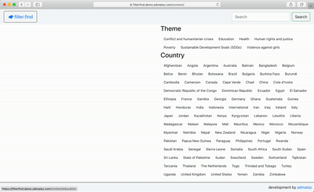

Filter:Find
7 December 2019
Filter:Find uses an intuitive pattern to makes relevant content findable with a few easy clicks
Filter:Find provides a way to create, manage and publish collections of content items. The use tags as the organising structure for the content provides the basis for an intuitive navigation that makes this both easy for editors to manage, and simple for users to find content that is useful to them in a few easy clicks.

Filterfind is available as a hosted service or as code hosted in your own environment, either node.js or a WordPress plugin.